Let N=max{n,qi,rj:
 ,
,
 }.
}.
By using an elimination procedure of the variable vk the system  becomes
equivalent to the system
becomes
equivalent to the system
with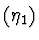
={ P=0, P(1)=0, P1=0, zi(1)-Qi(1)zi=0,
Rjvj(1)-Rj(1)=0,,
}.
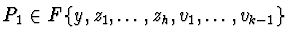
, Qiand Rj in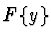
, ord(P1)=N+1, ord(Qi)=qi and ord(Rj)=rj for all i and j.By using an elimination procedure of the variable vk-1 the system becomes equivalent to the system
with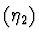
={ P=0, P(1)=0, P1=0, P1(1)=0, P2=0, zi(1)-Qi(1)zi=0,
Rjvj(1)-Rj(1)=0,
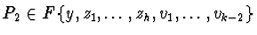
,Finally by using recursively an elimination procedure of the variables
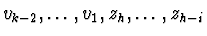
the systemwith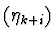
={ P=0, P(1)=0, P1=0, P1(1)=0, ..., Pk=0, Pk(1)=0,..., Pk+i-1=0, Pk+i-1(1)=0, Pk+i=0, zi(1)-Qi(1)zi=0, Rjvj(1)-Rj(1)=0,
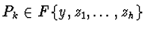
,...,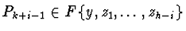
,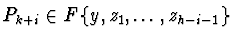
,
If i=h, then the system  is equivalent to the system
is equivalent to the system
with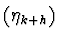
={ P=0, P(1)=0, P1=0, P1(1)=0, ..., Pk=0, Pk(1)=0,..., Pk+h-1=0, Pk+h-1(1)=0, Pk+h=0, zi(1)-Qi(1)zi=0, Rjvj(1)-Rj(1)=0,
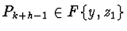
,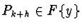
,
Now the differential ideal I=[P,
zi(1)-Qi(1)zi,
Rjvj(1)-Rj(1),
 ,
,
 ]=
[P, P1=0,..., Pk,...,Pk+h-1, Pk+h=0,
zi(1)-Qi(1)zi,
Rjvj(1)-Rj(1),
]=
[P, P1=0,..., Pk,...,Pk+h-1, Pk+h=0,
zi(1)-Qi(1)zi,
Rjvj(1)-Rj(1),
 ,
,
 ]
so the systems
]
so the systems  and
and  are
equivalent.
are
equivalent.
Let
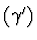
be the following system={ P=0, P(1)=0, P1=0, P1(1)=0, ..., Pk=0, Pk(1)=0,...,The system is equivalent to the system
Pk+h-1=0, Pk+h-1(1)=0, Pk+h=0, zi= exp(Qi), vj= log(Rj),
zi(1)-Qi(1)zi=0, Rjvj(1)-Rj(1)=0,
Since each elimination of one variable among zi and vj riquires one more derivative of P by 3.1.1., then
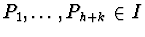
and the system is equivalent to the following system={ P=0, P(1)=0,..., P(h+k)=0, zi= exp(Qi), vj= log(Rj),
zi(1)-Qi(1)zi=0, Rjvj(1)-Rj(1)=0,
Finally the differential equation {
 } is equivalent to the system
} is equivalent to the system
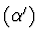
={ P==0, Ph+k=
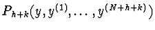
= 0, zi= exp(Qi), vj= log(Rj),
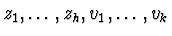
in the system(i) By using the Ritt's theory of characteristic sets it is sufficient to find the unique differential polynomial
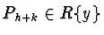
in the extended characteristic set of the set of differential polynomials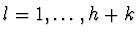
,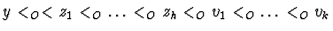
.(ii) By using the Gröbner bases techniques, it is sufficient to find the Gröbner basis G of the ideal Jh+k=(
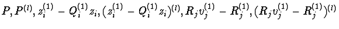
: ,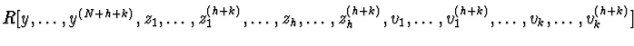
with respect to the lexicographic term ordering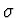
with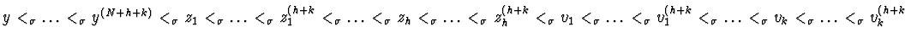
. The riquired differential polynomial Ph+k is in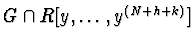
.(iii) By using the differential resultant theory, e.g. by finding the differential resultant of the h+k+1 differential polynomials P,
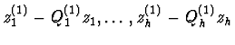
,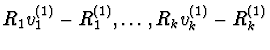
, as differential polynomials in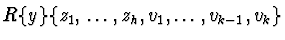
.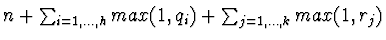
. By differential resultant theory such differential resultant is equal to the resultant of the polynomials P,...,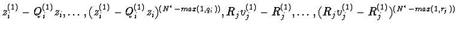
,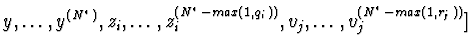
: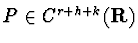
for some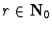
.